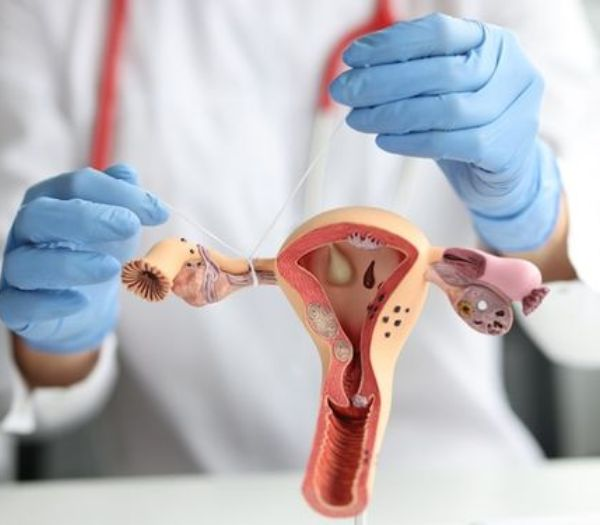
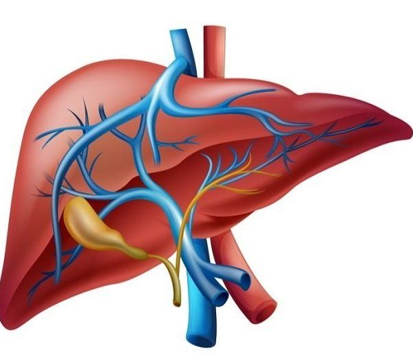

Surgeries
we specialize in a wide range of surgical procedures designed to improve your health, enhance your well-being, and boost your confidence. Our team of highly skilled surgeons is dedicated to providing the highest level of care, utilizing the latest techniques and technologies to ensure optimal outcomes for each and every patient.
Cardiology
Cardiology, a specialized branch of medicine, delves into the intricate world of the heart and its functions. With the heart being the central engine that drives our circulatory system, cardiology plays a pivotal role in diagnosing, treating, and preventing various cardiovascular disorders.

Cardiology, a specialized branch of medicine, delves into the intricate world of the heart and its functions. With the heart being the central engine that drives our circulatory system, cardiology plays a pivotal role in diagnosing, treating, and preventing various cardiovascular disorders. From the rhythmic beat that keeps us alive to the complexities of blood flow, cardiology offers insights into the mechanisms that sustain life.
- Arhythmia:
- Breast
- Liposuction:
- Facelift:
- Preventive :
- Diagnostic Tools:
- Interventional :
- Arrhythmia :
Neurology
Neurology is a captivating and intricate branch of medicine that delves into the complexities of the nervous system – the body's communication network. From the brain's intricate command center to the delicate nerves that extend throughout the body, neurology seeks to understand, diagnose, and treat a wide spectrum of neurological disorders. This field holds the key to unraveling the mysteries of the human mind and the intricate mechanisms that govern our movements, thoughts, and emotions.

We understand that undergoing surgery can be a significant decision, and we are here to support you throughout the entire processBrain Health and Function: Neurologists study the brain's structure and function to gain insights into its role in cognition, emotion, memory, and behavior. They diagnose and treat disorders ranging from migraines and epilepsy to neurodegenerative diseases like Alzheimer's and Parkinson's.Brain Health and Function: Neurologists study the brain's structure and function to gain insights into its role in cognition, emotion, memory, and behavior. They diagnose and treat disorders ranging from migraines and epilepsy to neurodegenerative diseases like Alzheimer's and Parkinson's.Brain Health and Function: Neurologists study the brain's structure and function to gain insights into its role in cognition, emotion, memory, and behavior. They diagnose and treat disorders ranging from migraines and epilepsy to neurodegenerative diseases like Alzheimer's and Parkinson's.Brain Health and Function: Neurologists study the brain's structure and function to gain insights into its role in cognition, emotion, memory, and behavior. They diagnose and treat disorders ranging from migraines and epilepsy to neurodegenerative diseases like Alzheimer's and Parkinson's.
Orthopedic Surgeries
Orthopedic surgery is a specialized branch of medicine that focuses on diagnosing, treating, and correcting musculoskeletal conditions. These surgical procedures are designed to address a wide range of issues affecting the bones, joints, muscles, ligaments, and tendons, with the ultimate goal of restoring mobility, reducing pain, and improving the overall quality of life for patients.

Joint Replacement Surgery:
Joint replacement procedures, such as total hip replacement, total knee replacement, and shoulder replacement, are performed to replace damaged or worn-out joints with artificial implants. These surgeries are particularly beneficial for individuals with severe arthritis or joint degeneration, helping them regain mobility and alleviate pain.
Spine Surgery:
Spine surgeries address conditions like herniated discs, spinal stenosis, and spinal deformities. Procedures range from minimally invasive techniques for nerve decompression to complex spinal fusion surgeries for stabilization.
Gastrointestinal Surgeries
Gastrointestinal surgeries encompass a diverse range of procedures performed to diagnose, treat, and manage conditions affecting the digestive system. From the esophagus to the rectum, these surgeries address a variety of issues that impact digestion, absorption of nutrients, and overall gastrointestinal well-being. The field of gastrointestinal surgery has evolved significantly, offering innovative approaches to restore digestive health and improve patients' quality of life.

Bariatric Surgery:
Bariatric procedures aim to assist individuals struggling with severe obesity in achieving sustainable weight loss.
Colorectal Surgery:
These surgeries address conditions affecting the colon and rectum, including colorectal cancer, inflammatory bowel disease (Crohn's disease, ulcerative colitis), and diverticulitis. Procedures range from minimally invasive techniques for polyp removal to more extensive surgeries for tumor resection and bowel reconstructio
Hernia Repair:
Gastrointestinal surgeons often perform hernia repairs, which involve repositioning displaced organs or tissues and reinforcing weakened abdominal walls. Hernias can occur in various areas, including the groin, abdomen.
Laparoscopic Surgery
Laparoscopic surgery is a category of general surgeries that use laparoscopes to perform minimally invasive surgeries in Nashville, Tennessee. As mentioned earlier, exploratory laparotomy can be performed with a laparoscope. Additionally, our surgeons use laparoscopic techniques to improve appendectomies, gallbladder removal, colon surgery, hernia repairs, and GERD repairs through Nissen Fundoplication.
LIPOMA:
A lipoma is a lump of fat cells that forms under the skin and causes a visual bulge on the exterior of the skin. Lipomas can be mistaken for cancerous growths, but they are not cancerous nor harmful. Some may cause pain if they form above a nerve. If you want a lipoma removed it can be done through excision surgery from a general surgeon or one of our board-certified plastic surgeons in Nashville.
Spine Surgery:
Spine surgeries address conditions like herniated discs, spinal stenosis, and spinal deformities. Procedures range from minimally invasive techniques for nerve decompression to complex spinal fusion surgeries for stabilization.
Colon and kidney:
In certain advanced laparoscopic procedures, where the specimen removed is too large to pull through a trocar site (as is done with gallbladders), an incision larger than 10 mm must be made. The most common of these procedures are removal of all or part of the colon (colectomy), or removal of the kidney (nephrectomy). Some surgeons perform these procedures completely laparoscopically, making the larger incision toward the end of the procedure for specimen removal, or, in the case of a colectomy, to also prepare the remaining healthy bowel to be reconnected (create an anastomosis). Many other surgeons feel that since they will have to make a larger incision for specimen removal anyway, they might as well use this incision to have their hand in the operative field during the procedure to aid as a retractor, dissector, and to be able to feel differing tissue densities (palpate), as they would in open surgery. This technique is called hand-assist laparoscopy. Since they will still be working with scopes and other laparoscopic instruments, CO2 will have to be maintained in the patient's abdomen, so a device known as a hand access port (a sleeve with a seal that allows passage of the hand) must be used. Surgeons who choose this hand-assist technique feel it reduces operative time significantly versus the straight laparoscopic approach. It also gives them more options in dealing with unexpected adverse events (e.g., uncontrolled bleeding) that may otherwise require creating a much larger incision and converting to a fully open surgical procedure.[6] Conceptually, the laparoscopic approach is intended to minimise post-operative pain and speed up recovery times, while maintaining an enhanced visual field for surgeons. Due to improved patient outcomes, in the last two decades, laparoscopic surgery has been adopted by various surgical sub-specialties, including gastrointestinal surgery (including bariatric procedures for morbid obesity), gynecologic surgery, and urology. Based on numerous prospective randomized controlled trials, the approach has proven to be beneficial in reducing post-operative morbidities such as wound infections and incisional hernias (especially in morbidly obese patients), and is now deemed safe when applied to surgery for cancers such as cancer of colon.[7][8] Laparoscopic instruments The restricted vision, the difficulty in handling of the instruments (new hand-eye coordination skills are needed), the lack of tactile perception, and the limited working area are factors adding to the technical complexity of this surgical approach. For these reasons, minimally invasive surgery has emerged as a highly competitive new sub-specialty within various fields of surgery. Surgical residents who wish to focus on this area of surgery gain additional laparoscopic surgery training during one or two years of fellowship after completing their basic surgical residency. In OB-GYN residency programs, the average laparoscopy-to-laparotomy quotient (LPQ) is 0.55.
LIVER SURGERY
At The Surgical Clinic, we treat liver cancer and liver disease through liver resectioning surgery. The earlier the disease is detected, the better the patients chances for successful treatment and recovery. The liver is a vital organ, but it can still function if the diseased sections are removed and the rest of the liver is healthy. Consult with your doctor and your surgeon to find out if this surgery is the right treatment for you.
Fetal blood supply:
In the growing fetus, a major source of blood to the liver is the umbilical vein, which supplies nutrients to the growing fetus. The umbilical vein enters the abdomen at the umbilicus and passes upward along the free margin of the falciform ligament of the liver to the inferior surface of the liver. There, it joins with the left branch of the portal vein. The ductus venosus carries blood from the left portal vein to the left hepatic vein and then to the inferior vena cava, allowing placental blood to bypass the liver. In the fetus, the liver does not perform the normal digestive processes and filtration of the infant liver because nutrients are received directly from the mother via the placenta. The fetal liver releases some blood stem cells that migrate to the fetal thymus, creating the T cells (or T lymphocytes). After birth, the formation of blood stem cells shifts to the red bone marrow. After 2–5 days, the umbilical vein and ductus venosus are obliterated; the former becomes the round ligament of liver and the latter becomes the ligamentum venosum. In the disorders of cirrhosis and portal hypertension, the umbilical vein can open up again.
Metabolism:
The liver plays a major role in carbohydrate, protein, amino acid, and lipid metabolism.
Biliary flow:
The biliary tract is derived from the branches of the bile ducts. The biliary tract, also known as the biliary tree, is the path by which bile is secreted by the liver then transported to the first part of the small intestine, the duodenum. The bile produced in the liver is collected in bile canaliculi, small grooves between the faces of adjacent hepatocytes. The canaliculi radiate to the edge of the liver lobule, where they merge to form bile ducts. Within the liver, these ducts are termed intrahepatic bile ducts, and once they exit the liver, they are considered extrahepatic. The intrahepatic ducts eventually drain into the right and left hepatic ducts, which exit the liver at the transverse fissure, and merge to form the common hepatic duct. The cystic duct from the gallbladder joins with the common hepatic duct to form the common bile duct.[41] The biliary system and connective tissue is supplied by the hepatic artery alone. Bile either drains directly into the duodenum via the common bile duct, or is temporarily stored in the gallbladder via the cystic duct. The common bile duct and the pancreatic duct enter the second part of the duodenum together at the hepatopancreatic ampulla, also known as the ampulla of Vater.
Dental anesthesia
Dentists inject anesthetic to block sensory transmission by the alveolar nerves. The superior alveolar nerves are not usually anesthetized directly because they are difficult to approach with a needle. For this reason, the maxillary teeth are usually anesthetized locally by inserting the needle beneath the oral mucosa surrounding the teeth. The inferior alveolar nerve is probably anesthetized more often than any other nerve in the body. To anesthetize this nerve, the dentist inserts the needle somewhat beyond the patient's last molar.
Orthodontic treatment:
Implants and implant-supported prosthesis also an orthodontic treatment as it involves bones Apicoectomy also an orthodontic treatment as part of the underlying bone structure must be removed Extraction a procedure in which a diseased, redundant, or problematic tooth is removed, either by pulling or cutting out. This procedure can be done under local or general anesthesia and is very common many people have their wisdom teeth removed before they become problematic. Fiberotomy a procedure to sever the fibers around a tooth, preventing it from relapsing
Endodontic:
Root canal treatment Pulpotomy the opening of the pulp chamber of the tooth to allow an infection to drain; usually a precursor to a root canal Pulpectomy the removal of the pulp from the pulp chamber to temporarily relieve pain; usually a precursor to a root canal Apicoectomy a root end resection. Occasionally a root canal alone is enough to relieve pain and the end of the tooth, called the apex, is removed by entering through the gingiva and surgically extracting the diseased material.
Prosthodontics:
Crown (caps) — artificial covering of a tooth made from a variety of biocompatible materials, including CMC/PMC (ceramic/porcelain metal composite), gold or a tin/aluminum mixture. The underlying tooth must be reshaped to accommodate these fixed restorations
Veneers — artificial coverings similar to above, except that they only cover the forward (labial or buccal) surface of the tooth. Usually for aesthetic purposes only.